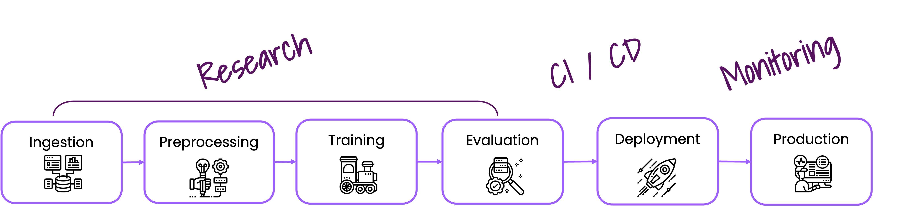

Welcome to Deepchecks!#
Deepchecks is the leading tool for testing, validating and monitoring your machine learning models and data, and it enables doing so with minimal effort. Deepchecks accompanies you through various validation and testing needs such as verifying your data’s integrity, inspecting its distributions, validating data splits, evaluating your model and comparing between different models.

Start Working with Deepchecks Testing#
Links for how to interact with us via our Slack Community or by opening an issue on Github.
End-to-end guides demonstrating how to start working with various CV use cases (object detection, classification and more)
Get Help & Give Us Feedback#
Join Our Community üëã
In addition to perusing the documentation, feel free to:
Ask questions on our Slack Community,
Post an issue or start a discussion on Github Issues.
To support us, please give us a star ⭐️ on Github, it really means a lot for open source projects!
Deepchecks’ Components#
Continuous validation of ML models and data includes testing throughout the model’s lifecycle:
Head over to the relevant documentation for more info: